Introduction
Meteor has been around since 2011. It is a full-stack JavaScript framework for web and mobile applications. It comes with a built-in instance of mongodb. Upon starting a meteor application, the database is automatically created and may be bootstrapped with initial data. This provides an immediate head-start to beginning development. Meteor makes it easy to build robust, secure real-time web applications, handling everything from the browser app to the server or database.
It makes developing web applications simple. It is easy to learn, and it lets you focus more on the functionality of your application than the basics of syncing data and serving pages.
It also has lots of behaviors conveniently built in. Meteor automatically performs live updates, so data changes show up immediately in your browser window, and even code changes to the application itself are pushed to all browsers and devices in “real-time”. Meteor has built-in latency compensation, is easy to deploy, and has easy-to-install “packages” that handle all sorts of functionality.
Let's Start
This tutorial will walk you through making a basic web application in Meteor - a simple contact book that lets users login and manage a list of contacts.
Installation
Let’s start by installing meteor by go to Meteor page https://www.meteor.com/install
Windows
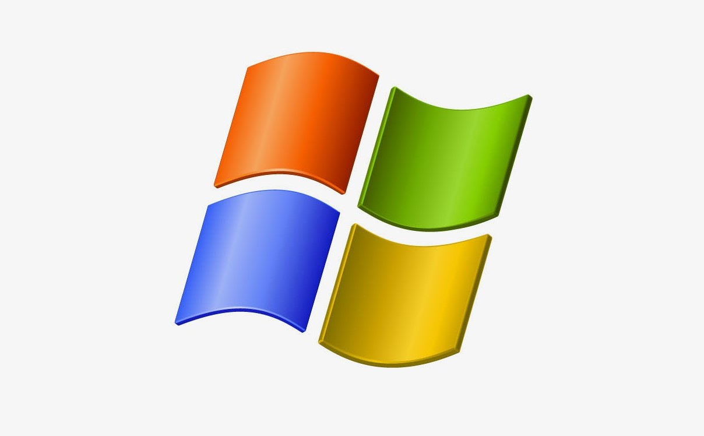First install Chocolatey, then run this command using an Administrator command prompt:meteor
choco install meteor
OSX / Linux
Run the following command in your terminal to install the latest official Meteor release:
curl https://install.meteor.com/ | sh
Building Real-Time Web Applications with Meteor
1. Creating New Project
Once installed, create your first application:
In your cmd/terminal, navigate to where you want to store your app and typing the following command: “meteor
create ContactBook”. This creates a new folder named, “ContactBook” and populates it with some boilerplate and dependent code.
To run the application, In the console, move into the folder. Then type “meteor” in the console to begin running it and see how it looks. Once meteor is running, open a web browser and navigate to http://localhost:3000 to see it in action. Note, any change you make to the files in the folder will cause meteor to instantly recompile and reload the page. This is part of the instant deployment during development.
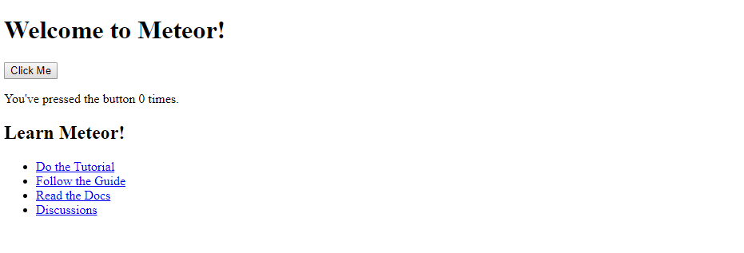2. Setting up Database
Inside the ContactBook folder, create a new folder named “collections”. In the collections folder, create a file named persons.js (by typing: cd > persons.js). For the contents of this file, include the following (you can use any text editor to edit file's content):
Persons = new Mongo.Collection('person');
The above code tells Meteor to create a collection named “person". Now we need to populate the data. In the base ContactBook folder, go to the folder named “server”. Inside the “server” folder, create a new file named “data.js”. Add the following to the data.js file:
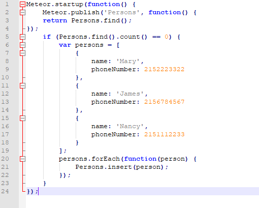Save the file and meteor will rebuild the application. Now, in the web browser console, try typing in the find statement, to list all database records for the Persons collection.
Persons.find().fetch()
3. Create Master Page Layout and View
We’ll start by adding a master layout, which will serve the individual single page web application view templates.
First, in the root “ContactBook” folder, create a folder named “client” (if you don't have one). Inside
the client folder, delete main.html, main.css, main.js that have already been there and create a file named
“app.head.html”, with the following contents:
Next, Inside the “client” folder, create another folder named “views”. Inside this folder, create a folder named “layout”. In the layout folder, create a file named “layout.html”. Enter the following for its contents:
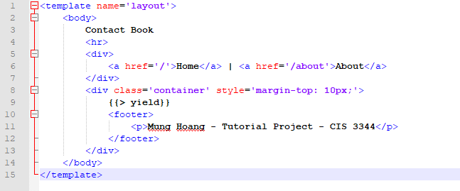The “yield” keyword is where the content from our partial views will be rendered. This is the key behind the single page navigation of meteor web applications. Now Let’s create our home view. Inside the “views” folder, create a file named “home.html”. For the contents of this file, include the following:
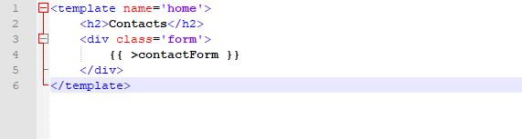In the “views” folder, create another file named “about.html”, with the following contents:
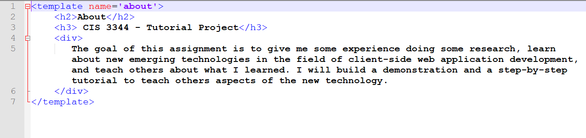Inside the “views” folder, create another folder named “controls”. We’ll now create the sub-control to render our form. In the “controls” folder, create a file named “contactForm.html”, this is a simple form for adding a new person to the database. Adding into the file with the following contents:
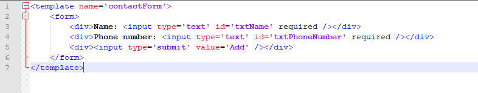4. Setting up Routing
In the root “ContactBook” folder, create a file named “client.js”. For the contents, include the following:
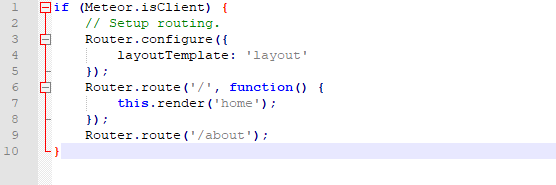Next, in the console, hit CTRL-C twice to quit the meteor.exe process. Then type: “meteor add iron:router”. This will add the routing package to the application. Finally, type “meteor” to launch the web application again. Refresh your web browser and you should see the web page displayed.
5. Displaying Data
Let’s show the list of people on our home page, just above the form. To do this, we’ll need to create another
partial view control. Inside the folder “ContactBook/client/views/controls” create a file named “persons.html”.
Add the following contents to the file:
Let’s include this new view in our home page. Edit the file “ContactBook/client/views/home.html” so it renders the new control, as follows:
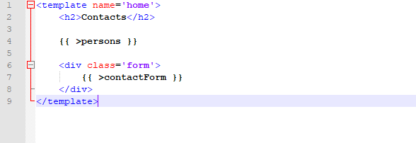Finally, we need to give the template access to the data for Persons. We can do this with a simple helper method. Edit the file “ContactBook/client.js” to contain the following:
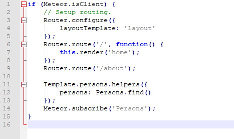Now get back to your browser to see the result. Meteor should have automatically refreshed your web page at this point.
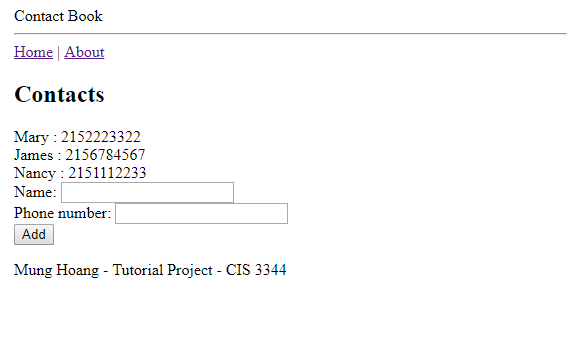6. Adding an Event Handler for Clicking a Button and create Inserting method
Create a new file in the root “ContactBook” folder, named “events.js”, with the following contents:
Inside the root folder “ContactBook”, create a file named “methods.js” with the following code:
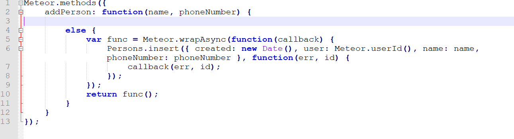7. Adding an User Login Feature
At the console, hit CTRL-C twice to exit the meteor.exe process. Type: “meteor add accounts-password” then type
“meteor add accounts-ui”. Edit the file “/ContactBook/client/views/layout/layout.html” and modify the html
as follows:
Our data is still open to anonymous users. Let’s now restrict it only to logged-in users. Edit the file “ContactBook/methods.js”, as follows:
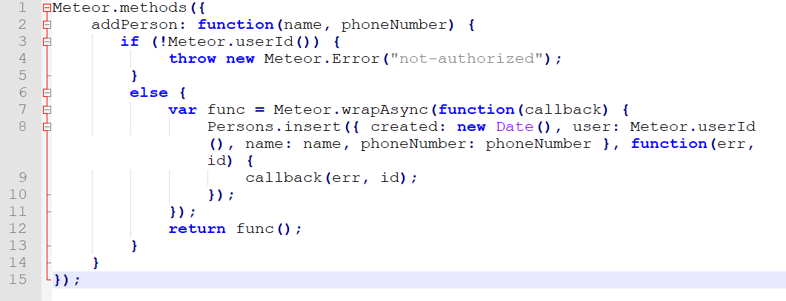Anonymous users will see people created by no particular user, while logged-in users will see both their own records, and anonymous records. Edit the file “ContactBook/server/data.js” and change the Meteor.publish(…) code to include a query, as follows:
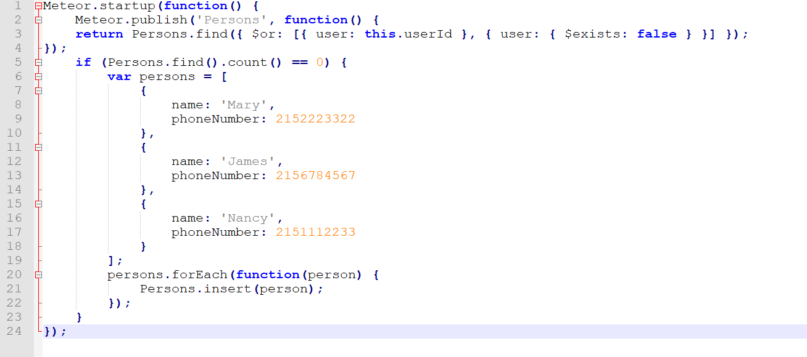Make one final change to “Contact/client/views/controls/persons.html” so that we can show the records created by our user:
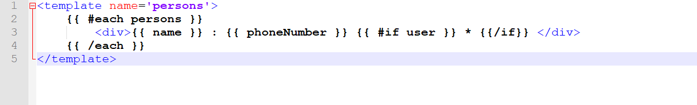You also need to turn off autopublish in meteor.
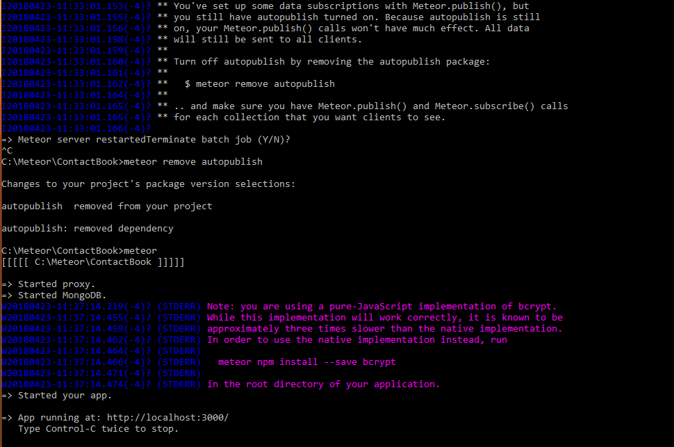Now let's start the app and see what we got.
Summary
As there are many competing web frameworks for creating applications, it’s helpful to master at least one or two. However, learning new frameworks is an excellent way to stay up-to-date. In this regard, let’s consider the pros and cons of a web application based upon Meteor.